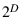
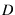

Next: Selecting Vertices to Retain Up: Algorithms Used in the Previous: Default mesh optimization in Contents
GRUMMP provides mesh coarsening capability to enable automatic generation
of quality coarse meshes for use with multigrid. The algorithm [10]
selects a set of vertices from the fine mesh to retain in the coarse
mesh, then removes unwanted vertices one at a time from the fine mesh.
This incremental deletion scheme has a robustness advantage over generating
a coarse mesh from scratch: incremental deletion always produces
a coarse mesh even if it can not remove all the unwanted vertices.
The scheme has been designed to coarsen triangulations by a factor
of about  